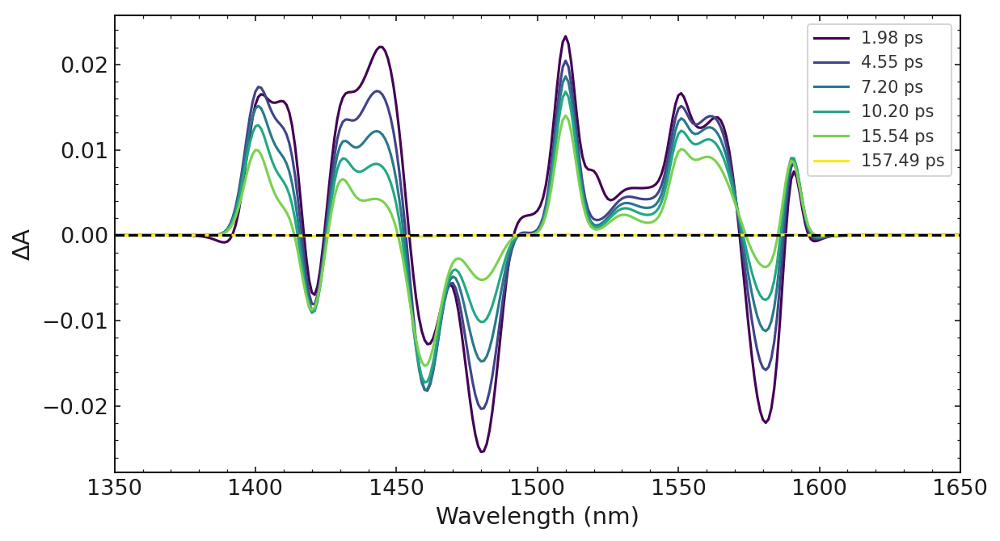
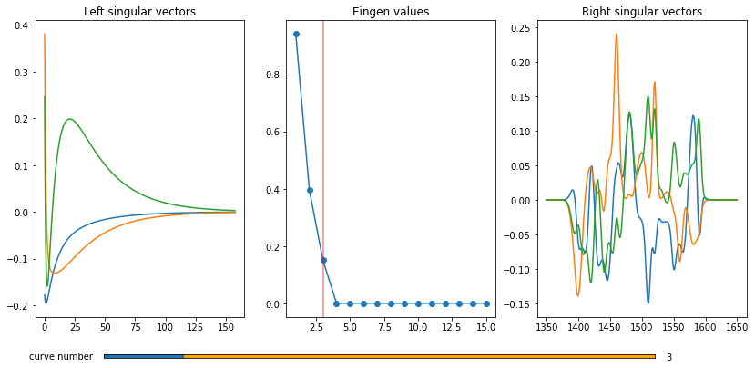
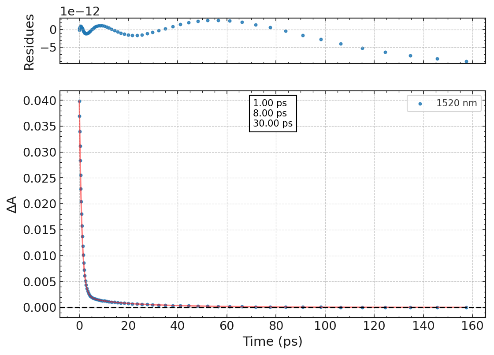
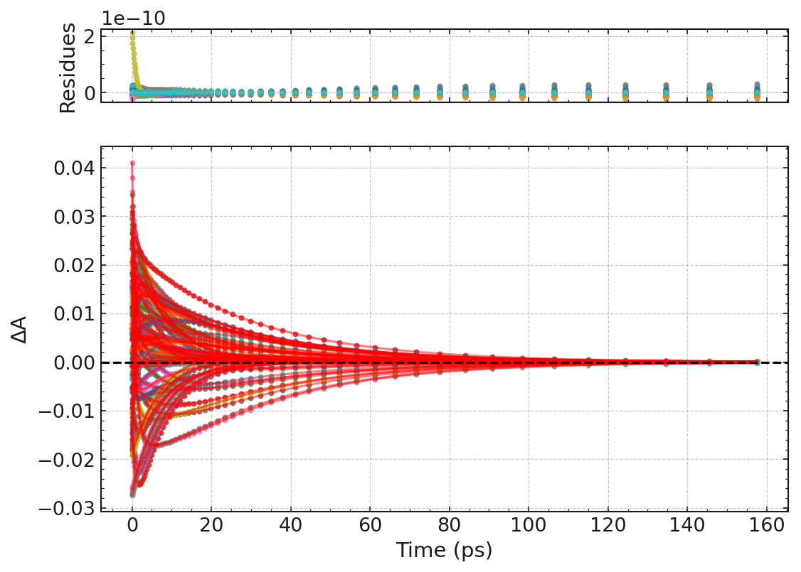
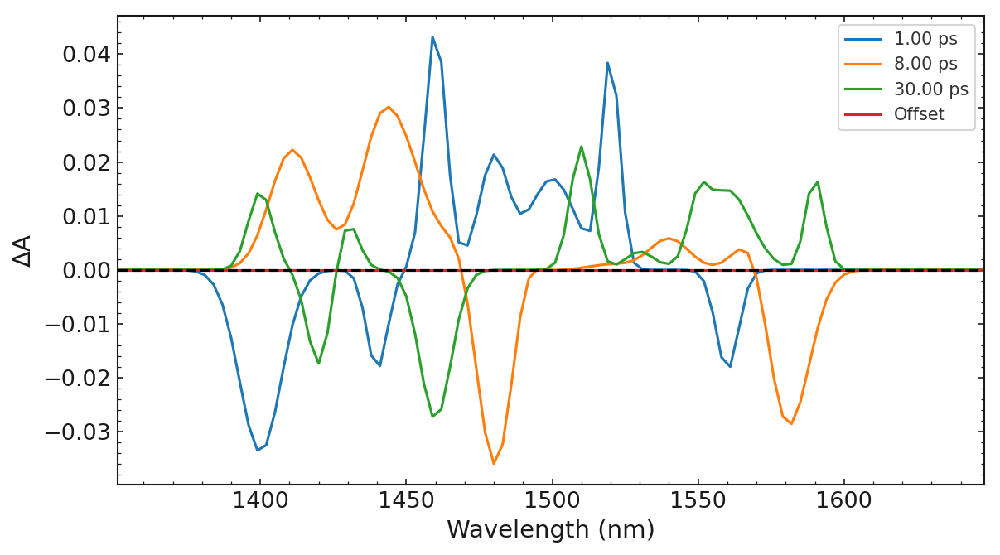

Ultrapyfit documentation
Disclaimer of Warranty
The package is ready to use and stable, and has been used previously for analyzing real datasets. In case there is any error the authors of the package are not responsible for any user use: That is to say: THERE IS NO WARRANTY FOR THE PROGRAM, and users are responsible for checking and verifying their results.
ultrapyfit
The Study of photochemical reactions
The study of photochemical reactions has been an intense field of research where two main questions can be pointed out: how to follow ultrafast dynamics and how to characterize precisely the nature of intermediates. Chemical reactions occur via transient excited states or reaction intermediates which are short-living species that play a major role in the reactions. The goal is to build a photo-dynamical scheme, i.e. to determine the nature of the different short-living transient species, their lifetime, their rate constant and the different pathways with their formation yield. The final target is then to find which parameters control the properties of interest (for example for rhodopsin the switching yield) in order to design efficient new bio-materials. The classical method is to use time-resolved spectroscopy which consists in measuring spectra while the photoreaction is occurring.
Time-resolved techniques are often based on a pump pulse (shorter than the dynamics to be studied) that triggers photophysical processes and photochemical reactions, and a probe beam (continuous or pulsed, depending on the technique) that will analyze the dynamics of the systems after the photo-excitation. The most represnetative technique is to use as probe a UV-Vis beam (TRUV-Vis), and to meassure the absorbance with and without laser excitation, and calculate the difference. Therefore the difference absorption spectra can be positive or negative related to the appearance of new absorbing intermediate species and photoproducts and disappearance of the initial products. In TRUV-vis spectroscopy, negative and positive difference spectra are the result of different contributions: Ground state bleaching or depopulation bands (GSB) and stimulated emission bands (SE) which are negative signals, and induced absorption which is positive. These signals can be seen in Figure 1 for TRUV-vis and TRIR experiments. While induced absorption and GSB are common for TRUV-vis and TRIR, SE is specific for TRUV-vis measurements.

TR spectroscopies often consist on detecting with a probe changes in absorption of the sample provoked by another laser pulse (the pump) over times with a stroboscopic or continuous detection. Thus, the resulting signal is a multivariate, with a first independent variable wavelength (UV-Vis) or wavenumber (IR), and a second independent variable being the time delay between pump and probe. In other words, a time-resolved data set is a collection of measurements done at different (distinct) times and wavelengths. The evolution of the absorption in time for the different wavelengths contains information such as reaction kinetics and molecular changes.
To unravel the chemical reactions and processes behind the multivariate data, model-based analysis of the data is mandatory. The most straightforward approach to model a photochemical reaction is to assume that the concentration of transient species or reaction rate is the sum of independent species (Beer-Lambert law) and only depends on the concentration of these species (first-order reaction). The integration of a first order reaction can be described by exponential decay. According to this hypothesis, the data should be explained by a weighted sum of exponential functions, where every exponential time constant represents the decay of a transient species that follow a first-order reaction, and the pre-exponential value or weight, represents the concentration of this species.
The most simple approach to unravel the dynamics under the data is to fit the data to a wegithed sum of exponential to the kinetic traces recorded at one wavelength. This can yield an estimation of the number of transient species involved in the reaction and their decay constants. Nevertheless, the ambiguity of multi-expoential fitting is well known. One of the most established approaches to analyze the different absorption spectra is to fit the time evolution for several wavelengths with the same sum of exponentials. This approach has been demonstrated to be much more robust and accurate than a separate or single wavelength analysis and is typically known as global fit analysis. Furthermore, from a global analysis of the data, not only the number of transient species and their decay time constants can be obtained but also their decay associated spectral shapes. These are obtained from the weights of each exponentials associated to a species at each of the wavelengths, which constitute the so call Decay Associated Spectra (DAS).
More complex analysis can be done if the data is fitted to a specific kinetic model with rate constants; this is known as target analysis or chemical reaction modelling66. Kinetic models are for example a cascade model in which the species evolve from one to the next one sequentially with 100% quantum yield efficiency, or it can be more complex kinetic models (parallel pathway) were the conversion yields between the different species and pathways can be fixed with known external parameters as photoconversion quantum yields. The result of such an analysis can give the so-called evolving associated difference spectra (EADS), which can yield a more comprehensive picture with rate constants of the different pathways of the photoreaction and not only time constants of species in DAS analysis.
The ultrapyfit package
The Experiment class is a wrapper over Ultrapyfit entire packge that simplifies the process and allow to eassilly format and explore data and generate high quality Figures.
The first thing is to load the data:
`` path = “my_path.csv”
experiment = Experiment.load_data(path) ``
in cases where the wavelenght vector correspond to the rows
experiment = Experiment.load_data(path, wave_is_row=True)
from ultrapyfit.experiment import Experiment
import warnings
warnings.filterwarnings('ignore')
path = "examples/data/denoised.csv"
experiment = Experiment.load_data(path, wave_is_row=True)
The firts thing is to get to know our data the best option is:
experiment.describe_data()
experiment.describe_data()
data description
--------------------------
Data set Nº traces Nº spectra
Loaded data: 301 66
Current data: 301 66
Selected traces: 301
units
---------------
Time unit: ps
Wavelength unit: nm
We can see we have 66 spectra (time points) and 301 time traces (wavelenght recorded); we can also see the defined units is the wavelenght or energy vector is in “nm” and time vector in “ps”.
These can be change wiht the attributes time_unit and wavelength_unit, are used to format figures axes and legends automatically
Defining time units
# these expressions are all equivalent
experiment.time_unit = "ns"
experiment.time_unit = "nano"
experiment.time_unit = "nanosecond"
experiment.time_unit
'ns'
For the moment we will keep th time in “ps”
experiment.time_unit = "ps"
The first thig is to explore the data three methods can become handy:
experiment.plot_3D()
experiment.plot_spectra()
experiment.plot_traces()
Plotting data
fig, ax = experiment.plot_3D()

experiment.plot_spectra()
style applied

experiment.plot_traces()
style applied

As we can see from the above figures all traces and spectra are plotted. The plot_spectra method is can be easilly used to plot a slection of spectra fast.
experiment.plot_spectra("auto")
This will plot 8 spectra equally spaced at the wavelength where the signal is maximum (in this case 1520 nm). For data where the signal initially increase or is not maximum at time 0 (not this case) you can use the option from_max_to_min
experiment.plot_spectra("auto", from_max_to_min=False)
experiment.plot_spectra("auto")
1520.0
style applied

The plot_spectra method is can be easilly used to plot a slection of spectra fast.
experiment.plot_spectra(["auto", num_spectra, equally_spaced_at])
The following command willl plot 6 spectra equally spaced 1440 nm
experiment.plot_spectra(["auto", 6, 1440])
experiment.plot_spectra(["auto", 6, 1440])
1440.0
style applied

Any valid maptlotlib style can be used just by passing to any plot method the argument style. If not there are several styles defined using maptlotlib style sheet which are equally accesible, alternatively a style can be defined in a json file as a sum of several maptlotlib styles, where a maptlotlib plotting function can be added as part of the style.
To define a user style just follow matplotlib gideline. By default the styles are “lmu_spec”, for spectra “lmu_trac” for traces, and “lmu_res” for the fits. All have a dark version by adding a d at the end “lmu_specd”
experiment.plot_spectra("auto", style="seaborn")
1520.0
style applied

color map
Any matplotlib coolor map is valid, this can be set using:
experiment.set_color_map("color_map")
The color map can be obtain
experiment.get_color_map("color_map")
experiment.set_color_map("OrRd")
Here is an exmaple of plotting a figure with a dark style using “lmu_specd”
experiment.plot_spectra("auto", style="lmu_specd")
1520.0
style applied

Number of components in the data; Singular Value Deocomposition (SVD)
In practice, the selection of the number of species/components (number of exponential time constants in DAS) is not straightforward, as a higher number of components will always fit better the data set, without necessarily describing better the photophysical model. The literature on similar systems can help in this step. Then a first visual analysis of the transient absorption spectra evolutions is already giving the main temporal and spectral evolutions. Finally, mathematical methods such as singular value decomposition (SVD) can also help. The SVD is a matrix factorization technique that decomposes the data (M) in three simpler matrices U, S and V (Equation 2).
$$M=U×S×V^T$$
Where U and V are the left and right singular vectors and S a diagonal matrix containing the singular values, the number of non-zero singular values is the rank or the minimum number of components that describes the data set M. Nevertheless, due to inevitably noisy data, the selection of non-zero singular values can be tricky. As can be seen, the selection of components is not trivial, and usually, several tests are done by adding or subtracting one component in the analysis, to find the minimum number of components that correctly describes the data. Once a model has been chosen, we try to describe the data with it (fitting), which consists in varying the model parameters iteratively until a set of parameters that describes the data is found.
To explore the SVD decomposition two methods ar available in the package, the first one in matplotlib is not use %inline will pop out an interactive figure.
experiment.plot_full_SVD(3)
experiment.plot_singular _values()
Since the data has been generated with 3 components and no noise has been added we can see that clearly 3 we obtain non-zero singular values
experiment.plot_full_SVD(3)

Fitting
Fitting a simple exponential model
As mentioned above, the most simple approach to model a photochemical reaction is to assume that the concentration of transient species or reaction rate follows a first-order reaction. According to this hypothesis, the data should be explained by a weighted sum of exponential functions, where every exponential time represents the decay of a transient species that follow a first-order reaction, and the pre-exponential value or weight is the concentration of this species. Logically, fitting one of the kinetic traces records at one wavelength can yield an estimation of the number of transient species involved in the reaction and their decay constants.
Fitting a single expoential wavelenght is quite straightforward in ultrapyfit
experiment.fitting.fit_single_exp(wavelength, average, t0, fwhm, taus, plot=True)
this will automatically plot out the result obtained, wiht the residues and the optimzed values.
experiment.fitting.fit_single_exp(1520, 2, 0, None, 0.8, 5, 50)
Preparing Fit
Starting Fit
style applied
False

experiment.fitting.fit_single_exp(1480, 2, 0, None, 0.8, 5, 50)
Preparing Fit
Starting Fit
style applied
False

Note the values of the residues are 1e-11 wich is the values given to stop the optimization.
REMEMBER you always have access to previous fits perform using
experiment.fitting.plot_single_fit(fit_number)
Globallly Fitting a simple exponential model
For cases wiht high signal to noise ration (S/N), fitting a single wavelength might result in good fitting values, Nevetherless, the model ambiguity is a well known issue in multi-exponential fitting (in this case we have used 3 exponentials). One of the most established approaches to overcome the multi-exponential fitting model ambiguity is to analyze a certain number of selected traces (multi wavelengths) with the same sum of exponentials. This approach, typically known as global analysis, has been demonstrated to be much more robust and accurate than separate or single wavelength analysis. Furthermore, from a global analysis of the data, not only the decay time constants and number of transient species can be obtained, but also their spectral shapes from the weights (pre-exponential factor) of the sum of exponential at each of the wavelengths, which constitute the so call Decay Associated Spectra (DAS).
For this in ultrapyfit, we first need to select a sub-set of traces in case we have many this is done with:
experiment.select_traces(points=3, average=1)
Since we have one trace per nm the above command will select one trace every 3 nanometers, and will average to +- 1 traces
experiment.select_traces(points=3, average=1)
experiment.describe_data()
data description
--------------------------
Data set Nº traces Nº spectra
Loaded data: 301 66
Current data: 301 66
Selected traces: 100
units
---------------
Time unit: ps
Wavelength unit: nm
Once the data has been selected we need to initialize the initial guess before fitting
experiment.fitting.initialize_exp_params(t0, fwhm, *taus)
Once the parameters have been initialized we can perfomr a global fit. This is the same multi-exponential fitting perfomr previously to the 1520 nm traces but now perform to 100 traces where the decay times have the contraint to be the same for all the traces.
experiment.fitting.fit_global()
experiment.fitting.initialize_exp_params(0, None, 0.8, 5, 50)
experiment.fitting.fit_global()
Preparing Fit
Starting Fit
Iteration: 200, chi2: 1.8655294315171926
Iteration: 400, chi2: 1.8655294317608768
Iteration: 600, chi2: 0.8306947330449641
Iteration: 800, chi2: 0.83069473306919
Iteration: 1000, chi2: 0.4912077152559998
Iteration: 1200, chi2: 0.49120771526086043
Iteration: 1400, chi2: 0.011932706604909027
Iteration: 1600, chi2: 0.01193270660579272
Iteration: 1800, chi2: 1.4951380112398673e-05
Iteration: 2000, chi2: 1.4951380112305695e-05
Iteration: 2200, chi2: 7.417861413160876e-08
Iteration: 2400, chi2: 7.41786141321848e-08
DONE Fit has been performed
The fits are very eassy to explore three methods are available:
experiment.fitting.print_fit_results()
experiment.fitting.plot_global_fit()
experiment.fitting.plot_DAS()
experiment.fitting.print_fit_results()
Fit number 1: Global Exponential fit
-------------------------------------------------
Results: Parameter Initial value Final value Vary
time 0: 0.0000 0.0000 False
tau 1: 0.8000 1.0000 True
tau 2: 5.0000 8.0000 True
tau 3: 50.0000 30.0000 True
Details:
Nº of traces: 100; average: 1
Fit with 3 exponential; Deconvolution False
Tau inf: None
Number of iterations: 2426
Number of parameters optimized: 800
Weights: False
experiment.fitting.plot_global_fit()
style applied

If a specific wavelength fitted want to be check
experiment.fitting.plot_global_fit(selection=[1390, 1480, 1520, 1580])
style applied

experiment.fitting.plot_DAS()
False
style applied

Package documentation
- ultrapyfit
- ultrapyfit package
- Subpackages
- ultrapyfit.fit package
- ultrapyfit.graphics package
- ultrapyfit.old package
- Submodules
- ultrapyfit.old.Calibration_Final_QT_2 module
- ultrapyfit.old.ChirpCorrection module
- ultrapyfit.old.ExponentialFit module
- ultrapyfit.old.Global_Fit_class module
- ultrapyfit.old.TargetFit module
- ultrapyfit.old.basicSpectrum module
- ultrapyfit.old.data_containers module
- ultrapyfit.old.targetmodel module
- Module contents
- ultrapyfit.utils package
- Submodules
- ultrapyfit.experiment module
- Module contents
- Subpackages
- ultrapyfit package